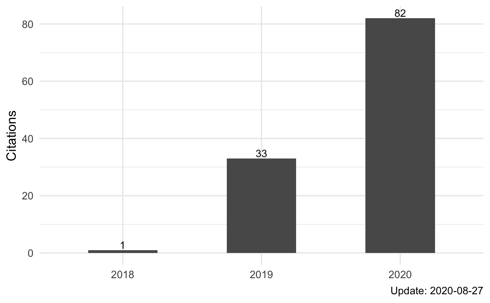

Get Google Scholar Profile
Your google scholar identifier. You can find it in the URL of your google scholar profile.
Logical. If TRUE, the publications are sorted by date.
If TRUE (default), store data to a cache file to avoid querying in next time within a day.
The store file is identical for each person and each date.
A directory path.
a Profile object with list structure.
# Put one unique Scholar ID from Google Scholar
r <- tinyscholar("FvNp0NkAAAAJ")
#> Using cache directory: /tmp/RtmpNM22mn/tinyscholar
#> Cannot find cache file /tmp/RtmpNM22mn/tinyscholar/unsorted_2022-08-09_FvNp0NkAAAAJ.rds
#> Try quering data from server: hiplot
#> Timeout/error when use hiplot server. Switch to use the server: cse.
#> Save data to cache file /tmp/RtmpNM22mn/tinyscholar/unsorted_2022-08-09_FvNp0NkAAAAJ.rds
#> Done
r
#> $publications
#> title
#> 1 APOBEC3B and APOBEC mutational signature as potential predictive markers for immunotherapy response in non-small cell lung cancer
#> 2 Antigen presentation and tumor immunogenicity in cancer immunotherapy response prediction
#> 3 Sex Differences in Cancer Immunotherapy Efficacy, Biomarkers, and Therapeutic Strategy
#> 4 The predictive power of tumor mutational burden in lung cancer immunotherapy response is influenced by patients' sex
#> 5 The UCSCXenaTools R package: a toolkit for accessing genomics data from UCSC Xena platform, from cancer multi-omics to single-cell RNA-seq
#> 6 Copy number signature analysis tool and its application in prostate cancer reveals distinct mutational processes and clinical outcomes
#> 7 UCSCXenaShiny: an R/CRAN package for interactive analysis of UCSC Xena data
#> 8 Copy number signature analyses in prostate cancer reveal distinct etiologies and clinical outcomes
#> 9 Ras downstream effector GGCT alleviates oncogenic stress
#> 10 Sigflow: an automated and comprehensive pipeline for cancer genome mutational signature analysis
#> 11 Hiplot: A comprehensive and easy-to-use web service boosting publication-ready biomedical data visualization
#> 12 Pan-cancer noncoding genomic analysis identifies functional CDC20 promoter mutation hotspots
#> 13 Can tumor mutational burden determine the most effective treatment for lung cancer patients?
#> 14 Ggct (γ‐glutamyl cyclotransferase) plays an important role in erythrocyte antioxidant defense and red blood cell survival
#> 15 Association of CSMD1 with Tumor Mutation Burden and Other Clinical Outcomes in Gastric Cancer
#> 16 Revisiting neoantigen depletion signal in the untreated cancer genome
#> 17 Deciphering clonal dynamics and metastatic routines in a rare patient of synchronous triple-primary tumors and multiple metastases with MPTevol
#> 18 Quantification of neoantigen-mediated immunoediting in cancer evolution.
#> 19 Onlinemeta: A Web Serve For Meta-Analysis Based On R-shiny
#> 20 Pan-cancer quantification of neoantigen-mediated immunoediting in cancer evolution
#> authors
#> 1 S Wang, M Jia, Z He, XS Liu
#> 2 S Wang, Z He, X Wang, H Li, XS Liu
#> 3 S Wang, LA Cowley, XS Liu
#> 4 S Wang, J Zhang, Z He, K Wu, XS Liu
#> 5 S Wang, XS Liu
#> 6 S Wang, H Li, M Song, Z Tao, T Wu, Z He, X Zhao, K Wu, XS Liu
#> 7 S Wang, Y Xiong, L Zhao, K Gu, Y Li, F Zhao, J Li, M Wang, H Wang, ...
#> 8 S Wang, H Li, M Song, Z He, T Wu, X Wang, Z Tao, K Wu, XS Liu
#> 9 Z He, S Wang, Y Shao, J Zhang, X Wu, Y Chen, J Hu, F Zhang, XS Liu
#> 10 S Wang, Z Tao, T Wu, XS Liu
#> 11 J Li, B Miao, S Wang, W Dong, H Xu, C Si, W Wang, S Duan, J Lou, Z Bao, ...
#> 12 Z He, T Wu, S Wang, J Zhang, X Sun, Z Tao, X Zhao, H Li, K Wu, XS Liu
#> 13 S Wang, Z He, X Wang, H Li, T Wu, X Sun, K Wu, XS Liu
#> 14 Z He, X Sun, S Wang, D Bai, X Zhao, Y Han, P Hao, XS Liu
#> 15 X Wang, S Wang, Y Han, M Xu, P Li, M Ke, Z Teng, P Huang, Z Diao, ...
#> 16 S Wang, X Wang, T Wu, Z He, H Li, X Sun, XS Liu
#> 17 Q Chen, QN Wu, YM Rong, S Wang, Z Zuo, L Bai, B Zhang, S Yuan, ...
#> 18 T Wu, G Wang, X Wang, S Wang, X Zhao, C Wu, W Ning, Z Tao, F Chen, ...
#> 19 Y Yi, A Lin, C Zhou, J Zhang, S Wang, P Luo
#> 20 T Wu, G Wang, X Wang, S Wang, X Zhao, C Wu, W Ning, Z Tao, F Chen, ...
#> venue citations year
#> 1 Oncogene 37 (29), 3924-3936, 2018 144 2018
#> 2 eLife, 2019 133 2019
#> 3 Molecules 24 (18), 3214, 2019 84 2019
#> 4 International journal of cancer 145 (10), 2840-2849, 2019 47 2019
#> 5 Journal of Open Source Software 4 (40), 1627, 2019 29 2019
#> 6 PLoS genetics 17 (5), e1009557, 2021 21 2021
#> 7 Bioinformatics 38 (2), 527-529, 2022 18 2022
#> 8 medRxiv, 2020 8 2020
#> 9 Iscience 19, 256-266, 2019 8 2019
#> 10 Bioinformatics 37 (11), 1590-1592, 2020 6 2020
#> 11 bioRxiv, 2022 4 2022
#> 12 Iscience 24 (4), 102285, 2021 2 2021
#> 13 Lung Cancer Management 8 (4), LMT21, 2019 2 2019
#> 14 British Journal of Haematology 195 (2), 267-275, 2021 1 2021
#> 15 International Journal of General Medicine 14, 8293, 2021 1 2021
#> 16 bioRxiv, 2020 1 2020
#> 17 Briefings in Bioinformatics, 2022 0 2022
#> 18 Cancer Research, 2022 0 2022
#> 19 bioRxiv, 2022 0 2022
#> 20 bioRxiv, 2022 0 2022
#>
#> $citations
#> when count
#> 1 total 509
#> 2 2018 2
#> 3 2019 36
#> 4 2020 117
#> 5 2021 195
#> 6 2022 154
#>
#> attr(,"class")
#> [1] "ScholarProfile" "list"
if (!is.null(r)) {
tb <- scholar_table(r)
tb$citations
tb$publications
pl <- scholar_plot(r)
pl$citations
pl$publications
}
